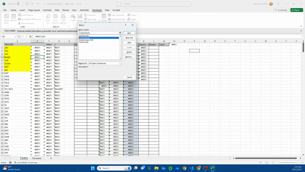

Sub CreateSheets()
Dim rng As Range
Dim cell As Range
'Show inputbox to user and prompt for a cell range
Set rng = Application.InputBox(Prompt:="Select data range:", _
Title:="Create sheets", _
Default:=Selection.Address, Type:=8)
'Iterate through cells in selected cell range
For Each cell In rng
'copies template
Sheets("Template").Copy After:=Sheets("Template")
'sends tracker
Sheets("Template (2)").Range("D15") = cell
'changes it to stock data type
Sheets("Template (2)").Range("D15").ConvertToLinkedDataType ServiceID:=268435456, LanguageCulture:="en-US"
'changes name of sheet
Sheets("Template (2)").Name = cell
'selects cells then sends over data
Sheets("Trackers").Activate
cell.Select
ActiveCell.Offset(0, 1).Formula = "=" + cell + "!G10"
ActiveCell.Offset(0, 3).Formula = "=" + cell + "!H10"
ActiveCell.Offset(0, 7).Formula = "=" + cell + "!E11"
'Continue with next cell in cell range
Next cell
End Sub
